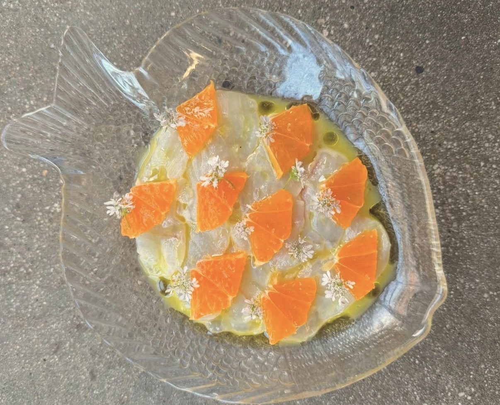

How to Season a Cast Iron Skillet: The Complete Guide
What seasoning actually is, the best oils to use, step-by-step instructions, daily maintenance, and how to restore a rusted pan.
Understanding the "why" behind cooking techniques makes you a better cook permanently — not just for one recipe.

What seasoning actually is, the best oils to use, step-by-step instructions, daily maintenance, and how to restore a rusted pan.

The correct grip, the claw hold, and the professional cuts — julienne, brunoise, chiffonade — that make your prep faster and your cooking more even.

Why Diamond Crystal and Morton's kosher salt aren't interchangeable, why you should finish dishes with Maldon, and the most common salting mistakes.
The protein mechanics and moisture redistribution that happen during the rest period — and exactly how long to rest different cuts.

The brown bits in your pan after cooking are pure concentrated flavor. Here's the step-by-step technique for turning them into a restaurant-quality sauce in 5 minutes.